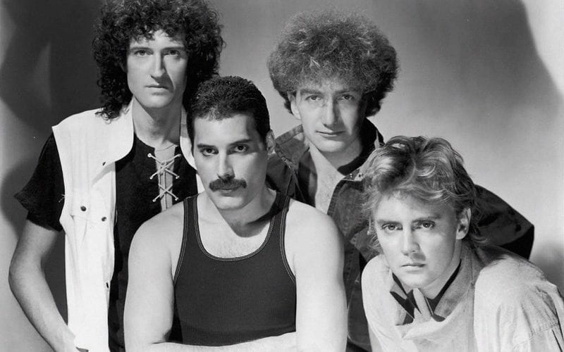
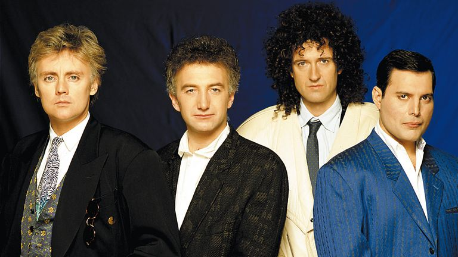
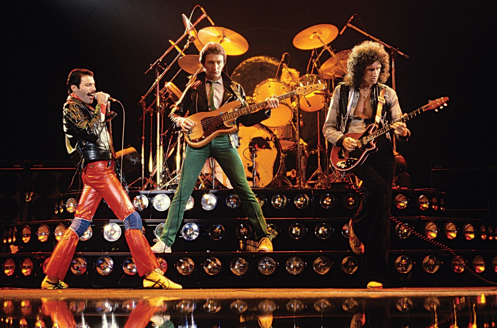

Mercury Pheonix Trust
Home
About
First Slide



Previous
Next
The Mercury Phoenix Trust was founded by Brian May, Roger Taylor and their manager Jim Beach in memory of rock band Queen’s iconic lead singer FREDDIE MERCURY who died in 1991 from AIDS related causes.